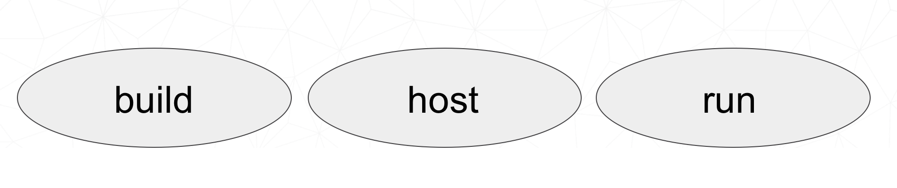
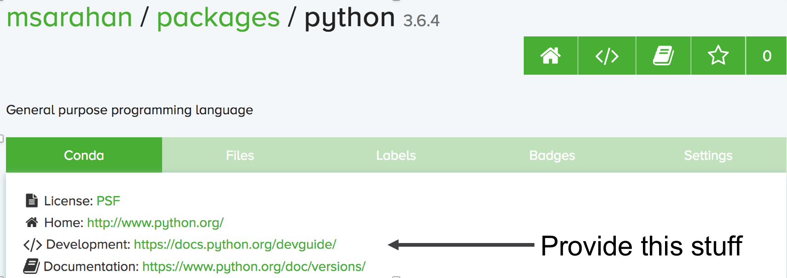
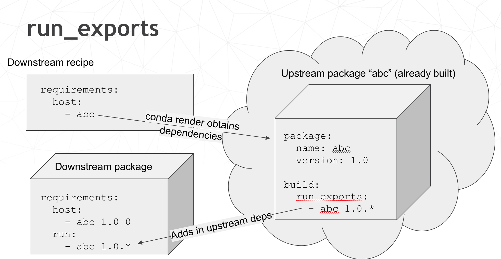
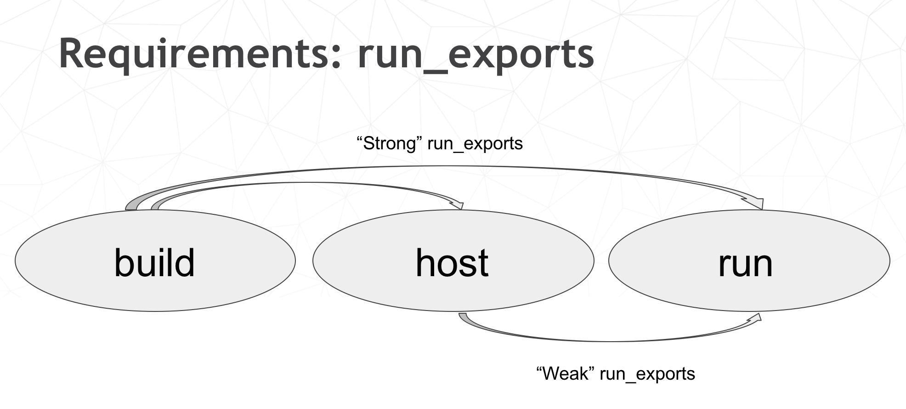

Building Conda Packages
Instructors
Michael Sarahan, Matt McCormick, Jean-Christophe Fillion-Robin, Filipe Fernandes Matt Craig, Chris Barker, Ray Donnelly, Jonathan Helmus
Outline
Python Package
Installing
PyPi
Conda
Compatibility and automation
What is a “package”?
In a broad sense, anything you install using your package manager
some kinds of packages have implied behavior and requirements
Unfortunate overloading: python “package”: a folder that python imports
Package Managers and Repos
NPM, apt, yum, dnf, chocolatey, pip, conda, homebrew, etc.
PyPI, anaconda.org, CRAN, CPAN
Some form of dependency management
Artifact and/or source repository
Implicit behavior & Requirements
- Folder structure
- Directly usable, or must be unpacked/installed?
Python packages
sound/
__init__.py
formats/
__init__.py
wavwrite.py
effects/
__init__.py
echo.py
Folders must have __init__.py file to make Python able to import them
__init__.py can be empty (and is, most of the time)
Python packages - why?
import nested module
import sound.effects.echo
from sound.effects import echo
from sound.effects.echo import somefunc
https://docs.python.org/3/tutorial/modules.html#packages
Let’s Make a Package
mypkg/
__init__.py
subpkg/
__init__.py
a.py
Let’s Make a Package
Windows:
mkdir mypkg/subpkg
echo. > mypkg/__init__.py
echo . > mypkg/subpkg/__init__.py
echo . > mypkg/subpkg/a.py
Mac/Linux:
mkdir -p mypkg/subpkg
touch mypkg/__init__.py
touch mypkg/subpkg/__init__.py
touch mypkg/subpkg/a.py
How Python Finds Packages
In python interpreter:
import sys from pprint import pprint pprint(sys.path)
sys.pathexplanation:https://stackoverflow.com/a/38403654/1170370
How to Get Things on sys.path
PYTHONPATHenvironment variable (fragile)- Installing packages (destination: site-packages folder)
.pthfiles insys.pathlocations
Find your site-packages folder
- Windows:
(install root)\Lib\site-packages - Mac/Linux:
(install root)/lib/pythonX.Y/site-packages
Installing packages
Installing:
python setup.py install
pip install .
Development installs:
python setup.py develop
pip install -e .
| Install | Development Install |
|---|---|
| Copies package into site-packages | Adds a .pth file to site-packages,
pointed at package source root |
| Used when creating conda packages | Used when developing software locally |
| Normal priority in sys.path | End of sys.path (only found if
nothing else comes first) |
https://grahamwideman.wikispaces.com/Python-+site-package+dirs+and+.pth+files
What about setup.py?
#!/usr/bin/env
pythonfrom setuptools import setups
setup(name='Distutils',
version='1.0',
description='Python Distribution Utilities',
author='Greg Ward',
author_email='gward@python.net',
url='https://www.python.org/sigs/distutils-sig/', packages=['distutils', 'distutils.command'],
)
https://docs.python.org/2/distutils/setupscript.html
What Does setup.py Do?
- Version & package metadata
- List of packages to include
- List of other files to include
- Lists of dependencies
- Lists of extensions to be compiled
Let’s Write a setup.py
#!/usr/bin/env python
from setuptools import setup
setup(name='mypkg',
version='1.0',
# list folders, not files
packages=['mypkg', 'mypkg.subpkg'],
)
(remember that a “package” is a folder with a __init__.py__ file)
setuptools
- Separate library (ships with Python by default, though)
- Adds entry point capability
- Provides find_packages function (use with caution)
- Creates eggs by default (people spend time fighting this later in the process)
Where does setup.py go?
| Folder Structure | |
|---|---|
mypkg-src
setup.py
mypkg/
__init__.py
subpkg/
__init__.py
a.py
|
|
Try installing your package
cd mypkg-src
python setup.py install
python -c “import mypkg.subpkg.a”
Go look in your site-packages folder
Making Packages the Easy Way
github.com/audreyr/cookiecutter
conda install -c conda-forge cookiecutter
or
pip install cookiecutter
Let’s make a project
cookiecutter: https://goo.gl/Jge1g8
That’s a shortened link to:
https://github.com/conda/cookiecutter-conda-python
full_name [Full Name]: Mike Sarahan
email [Email Address]: msarahan@anaconda.com
github_username [github_username]: msarahan
repo_name [repository_name]: acon_demo
package_name [acon_demo]:
project_short_description [Short description]: acon demo
version [0.1.0]:
What did we get?
ls -R acon_demo
README.rst acon_demo conda.recipe setup.py tests
acon_demo/acon_demo:
__init__.py __main__.py cli.py
acon_demo/conda.recipe:
meta.yaml
acon_demo/tests:
__init__.py test_cli.py
Requirements in setup.py
#!/usr/bin/env python
from distutils.core import setup
setup(name='mypkg',
version='1.0',
# list folders, not files
packages=['mypkg', 'mypkg.subpkg'],
install_requires=['click'],
)
Requirements in requirements.txt
Common Mistake:
requirements.txtoften from pip freeze- Pinned way too tightly. OK for env creation, bad for packaging.
- Donald Stufft (PyPA): Abstract vs. Concrete dependencies
Requirements in setup.cfg (ideal)
[metadata]
name = my_package
version = attr:
src.VERSION
[options]
packages = find:
install_requires = click
Parseable without execution, unlike setup.py
Break time!
Up next: producing redistributable artifacts
Redistributable artifacts
- sdists
- wheels
- conda packages
- eggs (deprecated)
When/how to use an sdist
- Pure python (no compilation requirements)
- Or, distributing source code that must be compiled prior to usage
python setup.py sdist
Wheels vs. Conda packages
| Wheels | Conda packages |
|---|---|
| Employed by pip, blessed by PyPA | Foundation of Anaconda ecosystem |
| Used by any python installation | Used by conda python installations |
| Mostly specific to Python ecosystem | General purpose (any ecosystem) |
| Good mechanism for specifying range of python compatibility | Primitive support for multiple python versions (noarch) |
| Depends on static linking or other system package managers to provide core libraries | Can bundle core system-level shared libraries as packages, and resolve dependencies |
Introducing conda-build
Orchestrates environment creation, activation, and build/test processes
Can build conda packages and/or wheels
Separate project from conda, but very tightly integrated
Open-source, actively developed:
Getting conda-build to work for you
Input: meta.yaml files
package:
name: mypkg
version: 1.0
Let’s Use conda-build
conda install conda-build
Windows only:
conda install m2-patch posix
All platforms:
conda build mypkg-src
What happened?
- Templates filled in, recipe interpreted
- Build environment created (isolated)
- Build script run
- New files in build environment bundled into package
- Test environment created (isolated)
- Tests run on new package
- cleanup
Obtaining recipes
Existing recipes (best)
Skeletons from other repositories (PyPI, CRAN, CPAN, RPM)
- DIY
Anaconda Recipes
- Official recipes that Anaconda uses for building packages
- Since Anaconda 5.0, forked from conda-forge recipes.
- Intended to be compatible with conda-forge long-term
- Presently, ahead of conda-forge on use of conda-build 3 features
Conda-forge

- Numfocus-affiliated community organization made up of volunteers
- One github repository per recipe
- Fine granularity over permissions
- Heavy use of automation for building, deploying, and updating recipes
- Free builds on public CI services (TravisCI, CircleCI, Appveyor)
Skeletons
- Read metadata from upstream repository
- Translate that into a recipe
- Will save you some boilerplate work
- Might work out of the box (should not assume automatic, though)
conda skeleton pypi
conda skeleton pypi <package name on pypi>
conda skeleton pypi click
conda skeleton pypi --recursive pyinstrument
conda skeleton cran
conda skeleton cran <name of pkg on cran>
conda skeleton cran acs
conda skeleton cran --recursive biwt
When all else fails, write a recipe
Only required section:
package:
name: abc
version: 1.2.3
Source types
- url
- git
- hg
- svn
- local path
Source Patches
- patch files live alongside meta.yaml
- create patches with:
-
diff-git diff-git format-patch
Exercise: let’s make a patch
package:
name: test-patch
version: 1.2.3
source:
url: https://zlib.net/zlib-1.2.11.tar.gz
build:
script: exit 1
Exercise: let’s make a patch
Builds that fail leave their build folders in place
look in output for source tree in:
*/conda-bld/test-patch_<numbers>/workcdthere
Exercise: let’s make a patch
git init
git add *
git commit -am “init”
edit file of choice
git commit -m “changing file because …”
git format-patch HEAD~1
Exercise: let’s make a patch
- copy that patch back alongside meta.yaml
- modify meta.yaml to include the patch
Multiple sources
source:
- url: https://package1.com/a.tar.bz2
folder: stuff
- url: https://package1.com/b.tar.bz2
folder: stuff
patches:
- something.patch
- git_url: https://github.com/conda/conda-build
folder: conda-build
Build options
number:- version reference of recipe (as opposed to version of source code)
script:- quick build steps, avoid separate build.sh/bld.bat files
skip:- skip building recipe on some platforms
entry_points:- python code locations to create executables for
run_exports:- add dependencies to downstream consumers to ensure compatibility
Requirements
Requirements: build vs. host
- Historically, only build
- Still fine to use only build
- host introduced for cross compiling
- host also useful for separating build tools from packaging environment
Requirements: build vs. host
If in doubt, put everything in host
- build is treated same as host for old-style recipes
(only build, no
{{ compiler() }}) - packages are bundled from host env, not build env
Post-build Tests
- Help ensure that you didn’t make a packaging mistake
- Ideally checks that necessary shared libraries are included as dependencies
Post-build tests: dependencies
Describe dependencies that are required for the tests (but not for normal package usage)
test:
requires:
- pytest
Post-build tests: test files
| Windows | Linux / Mac |
|---|---|
run_test.pl, run_test.py, run_test.r, run_test.lua |
|
run_test.bat |
run_test.sh |
Post-build tests
- May have specific requirements
- May specify files that must be bundled for tests (
source_files) imports:language specific imports to try, to verify correct installationcommands:sequential shell-based commands to run (not OS-specific)
https://conda.io/docs/user-guide/tasks/build-packages/define-metadata.html#test-section
Import Tests
test:
imports:
- dateutil
- dateutil.rrule
- dateutil.parser
- dateutil.tz
Test commands
test:
commands:
- curl --version
- curl-config --features # [not win]
- curl-config --protocols # [not win]
- curl https://some.website.com
Outputs - more than one pkg per recipe
package:
name: some-split
version: 1.0
outputs:
- name: subpkg
- name: subpkg2
Outputs - more than one pkg per recipe
- Useful for consolidating related recipes that share (large) source
- Reduce update burden
- Reduce build time by keeping some parts of the build, while looping over other parts
- Also output different types of packages from one recipe (wheels)
https://conda.io/docs/user-guide/tasks/build-packages/define-metadata.html#outputs-section
Outputs rules
- list of dicts
- each list must have
nameortypekey - May use all entries from
build,requirements,test,aboutsections - May specify files to bundle either using globs or by running a script
Outputs Examples
https://github.com/AnacondaRecipes/curl-feedstock/blob/master/recipe/meta.yaml
Exercise: Split a Package
Curl is a library and an executable. Splitting them lets us clarify where Curl is only a build time dependency, and where it also needs to be a runtime dependency.
Starting point:
https://github.com/conda-forge/curl-feedstock/tree/master/recipe
Exercise: Split a Package
Solution:
https://github.com/AnacondaRecipes/curl-feedstock/tree/master/recipe
About section
Extra section: free-for-all
- Used for external tools or state management
- No schema
- Conda-forge’s maintainer list
- Conda-build’s notion of whether a recipe is “final”
https://conda.io/docs/user-guide/tasks/build-packages/define-metadata.html#extra-section
Break time!
Advanced recipe tricks coming next
Conditional lines (selectors)
some_content # [some expression]
- content inside
[...]is eval’ed - namespace includes OS info, python info, and a few others
https://conda.io/docs/user-guide/tasks/build-packages/define-metadata.html#preprocessing-selectors
Exercise: Limit a Recipe to Only Linux
package:
name: example_skip_recipe
version: 1.0
build:
skip: True
Exercise: Limit a Recipe to Only Linux
package:
name: example_skip_recipe
version: 1.0
build:
skip: True# [not linux]
Intro to Templating with Jinja2
Fill in information dynamically
- git tag info
- setup.py recipe data
- centralized version numbering
- string manipulation
How does Templating Save You Time?
{% set version = "3.0.2" %}
package:
name: example
version: {{ version }}
source:
url: https://site/{{version}}.tgz
Jinja2 Templating in meta.yaml
Set variables:
{% set somevar=”someval” %}
Use variables:
{{ somevar }}
Expressions in {{ }} are roughly python
Jinja2 conditionals
Selectors are one line only. When you want to toggle a block, use jinja2:
{%- if foo -%}
toggled content
on many lines
{% endif %}
Exercise: use Jinja2 to reduce edits
package:
name: abc
version: 1.2.3
source:
url: http://my.web/abc-1.2.3.tgz
Exercise: use Jinja2 to reduce edits
{% set version=”1.2.3” %}
package:
name: abc
version: {{ version }}
source:
url: http://w/abc-{{version}}.tgz
Variants: Jinja2 on steroids
Matrix specification in yaml files
somevar:
- 1.0
- 2.0
anothervar:
- 1.0
All variant variables exposed in jinja2
In meta.yaml,
{{ somevar }}
And this loops over values
Exercise: try looping
meta.yaml:
package:
name: abc
version: 1.2.3
build:
skip: True # [skipvar]
conda_build_config.yaml:
skipvar:
- True
- False
Exercise: try looping
meta.yaml:
package:
name: abc
version: 1.2.3
requirements:
build:
- python {{ python }}
run:
- python {{ python }}
conda_build_config.yaml:
python:
- 2.7
- 3.6
Exercise: try looping
meta.yaml:
package:
name: abc
version: 1.2.3
requirements:
build:
- python
run:
- python
Exercise: try looping
conda_build_config.yaml:
python:
- 2.7
- 3.6
Jinja2 functions
loading source data:
load_setup_py_data
load_file_regex
Dynamic Pinning:
pin_compatible
pin_subpackage
Compatibility Control:
compiler
cdt
Loading setup.py data
{% set setup_data = load_setup_py_data() %}
package:
name: abc
version: {{ setup_data[‘version’] }}
- Primarily a development recipe tool - release recipes specify version instead, and template source download link
- Centralizing version info is very nice - see also
versioneer,setuptools_scm,autover, and many other auto-version tools
Loading arbitrary data
{% set data = load_file_regex(load_file='meta.yaml',
regex_pattern='git_tag: ([\\d.]+)') %}
package:
name: conda-build-test-get-regex-data
version: {{ data.group(1) }}
- Useful when software provides version in some arbitrary file
- Primarily a development recipe tool - release recipes specify version instead, and template source download link
Dynamic pinning
Use in meta.yaml, generally in requirements section:
requirements:
host:
- numpy
run:
- {{ pin_compatible(‘numpy’) }}
Dynamic pinning
Use in meta.yaml, generally in requirements section:
requirements:
host:
- numpy
run:
- {{ pin_compatible(‘numpy’) }}
- Pin run req based on what is present at build time
Dynamic pinning in practice
Used a lot with numpy:
https://github.com/AnacondaRecipes/scikit-image-feedstock/blob/master/recipe/meta.yaml
Dynamic pinning within recipes
Refer to other outputs within the same recipe
- When intradependencies exist
- When shared libraries are consumed by other libraries
https://github.com/AnacondaRecipes/aggregate/blob/master/clang/meta.yaml
Compilers
Use in meta.yaml in requirements section:
requirements:
build:
- {{ compiler(‘c’) }}
- explicitly declare language needs
- compiler packages can be actual compilers, or just activation scripts
- Compiler packages utilize run_exports to add necessary runtime dependencies automatically
Why put compilers into Conda?
- Explicitly declaring language needs makes reproducing packages with recipe simpler
- Binary compatibility can be versioned and tracked better
- No longer care what the host OS used to build packages is
- Can still use system compilers - just need to give conda-build information on metadata about them. Opportunity for version check enforcement.
run_exports
“if you build and link against library abc, you need a runtime dependency on library abc”
This is annoying to keep track of in recipes.
Upstream package “abc” (already built)
package:
name: abc
version: 1.0
build:
run_exports:
- abc 1.0.*
Downstream recipe
requirements:
host:
- abc
Downstream package
requirements:
host:
- abc 1.0 0
run:
- abc 1.0.*
run_exports

run_exports
- Add host or run dependencies for downstream packages that depend on upstream that specifies run_exports
- Expresses idea that “if you build and link against library abc, you need a runtime dependency on library abc”
- Simplifies version tracking
Requirements: run_exports
Uploading packages: anaconda.org
- Sign-up:
https://anaconda.org/
- Requirement:
conda install anaconda-client
- CLI: anaconda upload path-to-package
- conda-build auto-upload:
conda config --set anaconda_upload True
Uploading packages: PyPI
- Sign-up:
https://pypi.org/account/register/ - Twine:
pip install twine - Upload with twine to Test PyPI:
twine upload --repository-url https://test.pypi.org/legacy/ dist/*
- Upload to PyPI:
twine upload dist/*